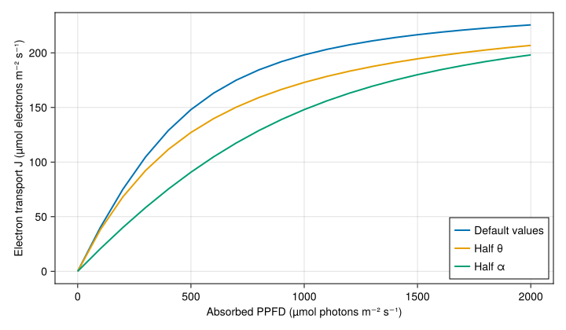

Photosynthesis
Photosynthesis models calculate the leaf's net uptake of CO₂, A, in µmol CO₂ m⁻² s⁻¹. This page shows how to simulate a leaf, choose a model for the inputs you have, and explore the effects of light and model parameters.
Choose a model
The three Fvcb models implement the Farquhar–von Caemmerer–Berry model of C₃ photosynthesis. They describe the same biochemical limitations, but differ in how they calculate CO₂ supply to the leaf.
| Model | Use it when… | What it calculates |
|---|---|---|
Fvcb | You know leaf-surface CO₂ (Cₛ) and want to combine photosynthesis with a stomatal model. | A, stomatal conductance Gₛ, and intercellular CO₂ Cᵢ, using an analytical solution. |
FvcbIter | You know boundary-layer conductance (Gbc) instead of Cₛ. | The same outputs, plus Cₛ, using an iterative solution. |
FvcbRaw | You know Cᵢ, for example from a gas-exchange measurement. | A, without a stomatal model. |
ConstantA | You want to prescribe assimilation for a controlled comparison. | A fixed A. |
ConstantAGs | You want to prescribe assimilation and still calculate stomatal conductance. | A fixed A, with Gₛ and Cᵢ from coupling to a stomatal model. |
Start with Fvcb() and Medlyn(...) for a coupled photosynthesis and stomatal-conductance simulation. Add Monteith() if you also want to calculate leaf temperature; the Energy balance page shows how.
Simulate photosynthesis and stomatal conductance
First, describe the weather. Here we prescribe leaf temperature and absorbed light separately, so an energy-balance or light-interception model is not needed.
using PlantBiophysics, PlantSimEngine, PlantMeteo, Dates
meteo = Atmosphere(
T=20.0, Wind=1.0, P=101.3, Rh=0.65, duration=Hour(1),
)Next, choose the models and supply the leaf inputs. Dₗ=meteo.VPD is a simple approximation for the vapour pressure difference used by Medlyn; it is exact only when leaf and air temperatures are equal. The energy-balance model calculates this difference from the simulated leaf temperature.
scene = leaf_scene(
Fvcb(),
Medlyn(g0=0.03, g1=12.0);
status=Status(
Tₗ=25.0, aPPFD=1000.0, Cₛ=400.0, Dₗ=meteo.VPD,
),
environment=meteo,
)Run one timestep and read the calculated values from the leaf:
run!(scene)
leaf = model_object(scene, :leaf)
(A=leaf.status.A, Gₛ=leaf.status.Gₛ, Cᵢ=leaf.status.Cᵢ)(A = 35.06039604540661, Gₛ = 1.2781584112141338, Cᵢ = 372.5696003423375)A is net assimilation (µmol CO₂ m⁻² s⁻¹), Gₛ is conductance to CO₂ (mol CO₂ m⁻² s⁻¹), and Cᵢ is intercellular CO₂ concentration (µmol mol⁻¹, equivalent to ppm). These are the latest values; to save a time series, use outputs=:all as in Several time steps.
Inputs and their units
| Input | Meaning | Unit |
|---|---|---|
Tₗ | Leaf temperature | °C |
aPPFD | Absorbed photosynthetically active photon flux density | µmol photons m⁻² leaf s⁻¹ |
Cₛ | CO₂ concentration at the leaf surface | µmol mol⁻¹ |
Dₗ | Leaf-to-air vapour pressure difference, needed by Medlyn | kPa |
aPPFD is absorbed light per unit reference leaf surface area. Incident light or canopy absorption per unit ground area must first be converted; see Light interception. The CO₂ concentration at the leaf surface (Cₛ) can differ from the atmospheric concentration (Cₐ) because of the boundary layer around the leaf.
You can also ask each model for its input and output names:
(inputs=inputs(Fvcb()), outputs=outputs(Fvcb()))(inputs = (:aPPFD, :Tₗ, :Cₛ), outputs = (:A, :Gₛ, :Cᵢ))Understand and set the FvCB parameters
The FvCB model calculates assimilation from the most limiting of three capacities: CO₂ fixation by Rubisco, regeneration of the CO₂ acceptor through electron transport, and utilization of the sugars produced. Respiration in the light is subtracted to obtain net assimilation.
The main parameters to start with are:
| Parameter | Meaning | Default | Unit |
|---|---|---|---|
Tᵣ | Reference temperature for the capacities below | 25.0 | °C |
VcMaxRef | Maximum Rubisco activity at Tᵣ | 200.0 | µmol m⁻² s⁻¹ |
JMaxRef | Maximum electron transport rate at Tᵣ | 250.0 | µmol electrons m⁻² s⁻¹ |
RdRef | Respiration in the light at Tᵣ | 0.6 | µmol CO₂ m⁻² s⁻¹ |
TPURef | Triose phosphate utilization capacity | 9999.0 | µmol m⁻² s⁻¹ |
α | Quantum yield of electron transport | 0.425 | mol electrons mol⁻¹ photons |
θ | Curvature of the electron-transport light response | 0.7 | dimensionless |
The large default TPURef effectively disables that limitation. The defaults are a starting point, not a calibration for a particular species. You can change selected parameters with keywords:
photosynthesis_model = Fvcb(VcMaxRef=80.0, JMaxRef=150.0, RdRef=1.0)
(VcMaxRef=photosynthesis_model.VcMaxRef,
JMaxRef=photosynthesis_model.JMaxRef, RdRef=photosynthesis_model.RdRef)(VcMaxRef = 80.0, JMaxRef = 150.0, RdRef = 1.0)Pass photosynthesis_model in place of Fvcb() in the simulation above to use these values. FvcbIter and FvcbRaw accept the same biochemical parameters. Additional parameters control their temperature responses; see Fvcb for the complete list and Parameter fitting to estimate capacities from measurements.
Explore the effect of light and parameters
Electron transport increases with absorbed light, then approaches its maximum rate. The parameter α controls the initial response to light, while θ controls the bend as the curve approaches saturation.
The example below compares the default response with half the value of each parameter. We hold JMax at JMaxRef to isolate the light response at the reference temperature. “Default values” means the current Fvcb() parameters in the table above, including α=0.425 and θ=0.7.
using CairoMakie
model = Fvcb()
light = 0:100:2000
fig = Figure(size=(720, 420))
ax = Axis(fig[1, 1];
xlabel="Absorbed PPFD (µmol photons m⁻² s⁻¹)",
ylabel="Electron transport J (µmol electrons m⁻² s⁻¹)",
)
for (label, α, θ) in (
("Default values", model.α, model.θ),
("Half θ", model.α, model.θ / 2),
("Half α", model.α / 2, model.θ),
)
J = [PlantBiophysics.get_J(q, model.JMaxRef, α, θ) for q in light]
lines!(ax, light, J; label=label, linewidth=2)
end
axislegend(ax; position=:rb)
fig
This is a response curve for electron transport J, not assimilation A. Assimilation also depends on CO₂ supply, the other biochemical limitations, and respiration.
Other model choices
FvcbIter: provide boundary-layer conductance
FvcbIter replaces the Cₛ input with Gbc, the boundary-layer conductance to CO₂ (mol CO₂ m⁻² s⁻¹). It uses atmospheric CO₂ from meteo.Cₐ to calculate the leaf-surface concentration as well as the intercellular concentration.
iter_scene = leaf_scene(
FvcbIter(),
Medlyn(g0=0.03, g1=12.0);
status=Status(Tₗ=25.0, aPPFD=1000.0, Gbc=0.67, Dₗ=meteo.VPD),
environment=meteo,
)
run!(iter_scene)
iter_leaf = model_object(iter_scene, :leaf)
(A=iter_leaf.status.A, Gₛ=iter_leaf.status.Gₛ,
Cₛ=iter_leaf.status.Cₛ, Cᵢ=iter_leaf.status.Cᵢ)(A = 33.42286222674308, Gₛ = 1.1852296144629348, Cₛ = 351.5670836275296, Cᵢ = 324.1883769418556)FvcbRaw: provide intercellular CO₂
If Cᵢ is known, FvcbRaw calculates assimilation directly. This is useful for exploring an A–Cᵢ response or fitting photosynthetic capacities without also fitting a stomatal model.
raw_scene = leaf_scene(
FvcbRaw();
status=Status(Tₗ=25.0, aPPFD=1000.0, Cᵢ=400.0),
environment=meteo,
)
run!(raw_scene)
model_object(raw_scene, :leaf).status.A35.843843683981376Prescribe assimilation
ConstantA simply sets A to its parameter value. It needs no leaf inputs:
constant_scene = leaf_scene(ConstantA(25.0); environment=meteo)
run!(constant_scene)
model_object(constant_scene, :leaf).status.A25.0Use ConstantAGs when you also need stomatal conductance and intercellular CO₂. Supply Cₛ and the inputs of your stomatal model:
constant_gs_scene = leaf_scene(
ConstantAGs(25.0),
Medlyn(g0=0.03, g1=12.0);
status=Status(Cₛ=380.0, Dₗ=2.0),
environment=meteo,
)
run!(constant_gs_scene)
constant_leaf = model_object(constant_gs_scene, :leaf)
(A=constant_leaf.status.A, Gₛ=constant_leaf.status.Gₛ, Cᵢ=constant_leaf.status.Cᵢ)(A = 25.0, Gₛ = 0.6540316693578007, Cᵢ = 341.7755512901268)This is useful for examining how other processes respond to a prescribed assimilation rate. It does not predict the response of assimilation itself.
Time resolution and further reading
Photosynthesis models prefer an hourly timestep and accept timesteps from one minute to six hours. These are rates, not accumulated carbon uptake; see Multi-rate simulation for running processes at different intervals and interpreting their outputs.
For the biological model, see Farquhar, von Caemmerer and Berry (1980), A biochemical model of photosynthetic CO₂ assimilation in leaves of C₃ species, and von Caemmerer and Farquhar (1981). Medlyn et al. (2002) discuss the temperature responses. The model docstrings give further references; Model evaluation compares simulations with measurements.